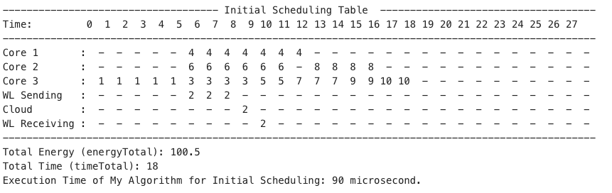

Introduction to Task Scheduling Optimization
In today’s mobile cloud computing landscape, the efficient scheduling of tasks between local resources and the cloud is crucial for balancing energy consumption and performance. My project tackles this problem by implementing the task scheduling algorithms presented in the research paper Energy and Performance-Aware Task Scheduling in a Mobile Cloud Computing Environment. The core goal is to minimize energy consumption while respecting hard application completion time constraints. Using this approach, the project demonstrates significant energy savings with only minor increases in total execution time.
Implementation Highlights
The implementation is built in C++ and utilizes structured data models to represent tasks and cores. The project leverages algorithms for priority calculation, task migration, and energy/time optimization. Key components include:
- Task Initialization: Defining tasks with attributes like execution times, dependencies, and weights.
- Priority Calculation: Recursively computing the importance of each task based on its critical path.
- Energy and Time Metrics: Calculating the total energy consumed by cores and cloud, and ensuring execution time does not exceed the specified threshold.
- Dynamic Scheduling: Migrating tasks between cores and the cloud to achieve optimal results.
The program processes multiple input examples, visualizes task scheduling results, and compares initial and optimized schedules, emphasizing significant energy reductions.

Achievements
- Initial vs. Final Scheduling: The system reduces total energy consumption by up to 81% while marginally increasing total execution time.
- Scalability: Successfully handles complex task graphs with up to 20 tasks.
- Efficiency: Outputs are generated in microseconds, showcasing the algorithm's real-time capabilities. This project exemplifies how theoretical concepts in task scheduling can be implemented and tested in a practical setting, demonstrating their utility in real-world applications.
For more details, refer to the project report and the source code.